Section 3.1 Cartesian Coordinates
When we visualize a relationship between two variables, we use the Cartesian coordinate system. This section covers the basic vocabulary and imagery of the Cartesian coordinate system.
The Cartesian coordinate system gives a numerical location for every point in a plane. It gives every point in a plane its own “address” in relation to a starting point and some agreed upon directions. We will use a street grid as an analogy. Here is a map with Carl’s home at the center. The map also shows some nearby businesses. Assume each unit in the grid represents one city block.
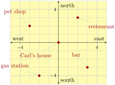
If Carl has an out-of-town guest who asks him how to get to the restaurant, Carl could say: “First go \(2\) blocks east (to the right on the map), then go \(3\) blocks north (up on the map).”
Everyone is in agreement to start at Carl’s house. What’s less obvious is that we all agree to travel in the east-west (left-right) direction first. And only after that is done will we travel north-south (up-down).
Two numbers are used to locate the restaurant. In the Cartesian coordinate system, these numbers are called coordinates and they are written as the ordered pair \((2,3)\text{.}\) The first coordinate, \(2\text{,}\) represents distance traveled from Carl’s house to the east (or to the right horizontally on the graph). The second coordinate, \(3\text{,}\) represents distance to the north (up vertically on the graph).
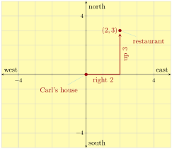
To travel from Carl’s home to the pet shop, he would go \(3\) blocks west, and then \(2\) blocks north.
In the Cartesian coordinate system, the positive directions are to the right and up. The negative directions are to the left and down. So the pet shop’s Cartesian coordinates are \((-3,2)\text{.}\)
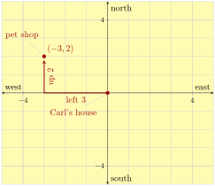
Remark 3.1.5.
It’s important to know that the order of Cartesian coordinates is (horizontal, vertical). The custom to communicate horizontal information before vertical information is fairly consistent even in math beyond this level.
Checkpoint 3.1.6.
Use Figure 2 to answer the following questions about Carl’s neighborhood.
(a)
What are the coordinates of the bar?
Explanation.
We have to move \(3\) units to the right, then \(3\) units down. So the coordinates are \((3,-3)\text{.}\)
(b)
What are the coordinates of the gas station?
Explanation.
We have to move \(2\) units to the left, then \(4\) units down. So the coordinates are \((-2,-4)\text{.}\)
(c)
What are the coordinates of Carl’s house?
Explanation.
We don’t move at all to get to Carl’s house. That is, we move \(0\) units to the left/right, and then \(0\) units up/down. So the coordinates are \((0,0)\text{.}\)
Warning 3.1.7. Notation Issue: Coordinates or Interval?
Unfortunately, the notation for an ordered pair looks exactly like interval notation for an open interval. Context will help you understand if \((1,3)\) means the point on a Cartesian plane that is \(1\) unit right and \(3\) units up, or if it means the interval of all real numbers between \(1\) and \(3\text{.}\)
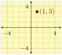
In a Cartesian coordinate system, the map of Carl’s neighborhood would look like this:
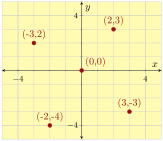
Definition 3.1.9. Cartesian Coordinate System.
The Cartesian coordinate system is a coordinate system that specifies each point uniquely in a plane by a pair of numerical coordinates, which are the signed (positive/negative) distances to the point from two fixed perpendicular directed lines, measured in the same unit of length. Those two reference lines are called the horizontal axis and vertical axis, and the point where they meet is the origin. The horizontal and vertical axes are often called the \(x\)-axis and \(y\)-axis, because traditionally, the variable \(x\) represents numbers on the horizontal axis and the variable \(y\) represents numbers on the vertical axis.
1
en.wikipedia.org/wiki/Cartesian_coordinate_systemThe plane based on the \(x\)-axis and \(y\)-axis is called a coordinate plane. The ordered pair used to locate a point is called the point’s coordinates, which consists of an \(x\)-coordinate and a \(y\)-coordinate. For example, the point \((1,2)\text{,}\) has \(x\)-coordinate \(1\text{,}\) and \(y\)-coordinate \(2\text{.}\) The origin has coordinates \((0,0)\text{.}\)
A Cartesian coordinate system is divided into four quadrants, as shown in Figure 10. The quadrants are traditionally labeled with Roman numerals.
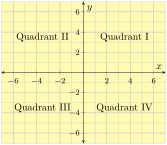
Example 3.1.11.
On paper, sketch a Cartesian coordinate system with units, and then plot the following points: \((3,2),(-5,-1),(0,-3),(4,0)\text{.}\)
Explanation.
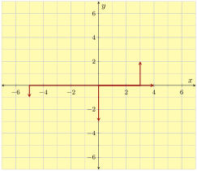
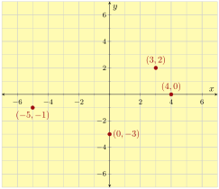
Checkpoint 3.1.12.
Plot the point \((3,5)\text{,}\) the origin, some point on the negative \(x\)-axis, and some point in quadrant IV.
Explanation.
The point \((3,5)\) is \(3\) units to the right of the origin and \(5\) units up. The origin itself, \((0,0)\) is where the axes cross. A point on the negative \(x\)-axis can be any point directly to the left of the origin, and not up or down from there. A point in quadrant IV can be anything in the lower right region.
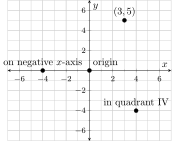
Reading Questions Reading Questions
1.
When you read English, you primarily read left to right. Then every once in a while your eyes drop down vertically to the next line. How is this similar to the way that we treat coordinates in the Cartesian coordinate system?
2.
A Cartesian coordinate system has seven places/regions that have special names. What are these seven places?
3.
How does math notation like \((-1,4)\) potentially mean two very different things, and how will you decide which meaning to use?
Exercises Exercises
Identifying Coordinates.
Identify the coordinates of each point in the graph.
1.
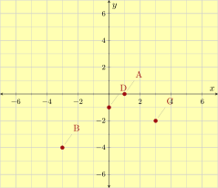
2.
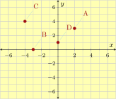
Sketching Points.
Make a Cartesian plot with the indicated points marked.
3.
\({\left(0,-1\right)}, {\left(5,-3\right)}, {\left(1,-8\right)}, {\left(4,0\right)}\)
4.
\({\left(8,0\right)}, {\left(-1,-8\right)}, {\left(0,-7\right)}, {\left(-2,5\right)}\)
5.
\({\left(-5,{\frac{2}{3}}\right)}, {\left(-{\frac{11}{3}},-2\right)}\)
6.
\({\left(-4,{\frac{10}{3}}\right)}, {\left({\frac{11}{3}},5\right)}\)
7.
\({\left(-2.75,-4.25\right)}, {\left(0.75,2.25\right)}\)
8.
\({\left(-1.75,2.75\right)}, {\left(-4.25,0.75\right)}\)
9.
\({\left(149,108\right)}, {\left(176,115\right)}\)
10.
\({\left(160,150\right)}, {\left(141,188\right)}\)
11.
Sketch a Cartesian coordinate plane and then shade the quadrants where the second coordinate is positive.
12.
Sketch a Cartesian coordinate plane and then shade the quadrants where the first coordinate is positive.
13.
Sketch a Cartesian coordinate plane and then shade the quadrants where the coordinates have the same sign.
14.
Sketch a Cartesian coordinate plane and then shade the quadrants where the coordinates have the opposite sign.
15.
Here is a graph of the number of SARS-CoV-2 (COVID) cases confirmed by the CDC within the United States during the month of January, 2020.
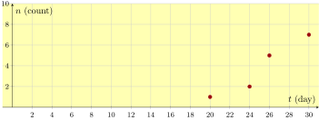
What are the coordinates for the data point corresponding to January 20th?
How many additional new cases were there between January 26th and January th?
16.
This is a graph representing stable isotopes of atomic elements (Hydrogen, Helium, etc.) up through the first three rows of the periodic table of elements.
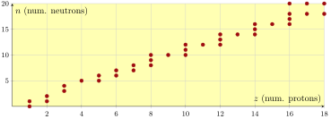
Carbon has \(6\) protons. List all of the ordered pairs of coordinates on this graph that correspond to Carbon.
According to the graph, there is a certain number of neutrons for which there is no stable isotope of any atom. What number of neutrons is this?
Quadrants.
Which quadrant is the point in?
17.
- \({\left(-4,-9\right)}\)
- \({\left(9,-4\right)}\)
- \({\left(4,9\right)}\)
- \({\left(4,-9\right)}\)
18.
- \({\left(7,-5\right)}\)
- \({\left(-5,-7\right)}\)
- \({\left(5,7\right)}\)
- \({\left(5,-7\right)}\)
19.
- \({\left(-6,-3\right)}\)
- \({\left(6,-3\right)}\)
- \({\left(6,3\right)}\)
- \({\left(3,-6\right)}\)
20.
- \({\left(7,-9\right)}\)
- \({\left(7,9\right)}\)
- \({\left(-7,-9\right)}\)
- \({\left(9,-7\right)}\)
Plotting Points and Choosing a Scale.
Answer these questions about the practical difficulties that might arise when plotting points and setting the scales on the two axes.
21.
What would be the difficulty with trying to plot \((12,4)\text{,}\) \((13,5)\text{,}\) and \((310,208)\) all on the same graph?
22.
The points \((3,5)\text{,}\) \((5,6)\text{,}\) \((7,7)\text{,}\) and \((9,8)\) all lie on a straight line. What can go wrong if you make a plot of a Cartesian plane with these points marked, and you don’t have tick marks that are evenly spaced apart?